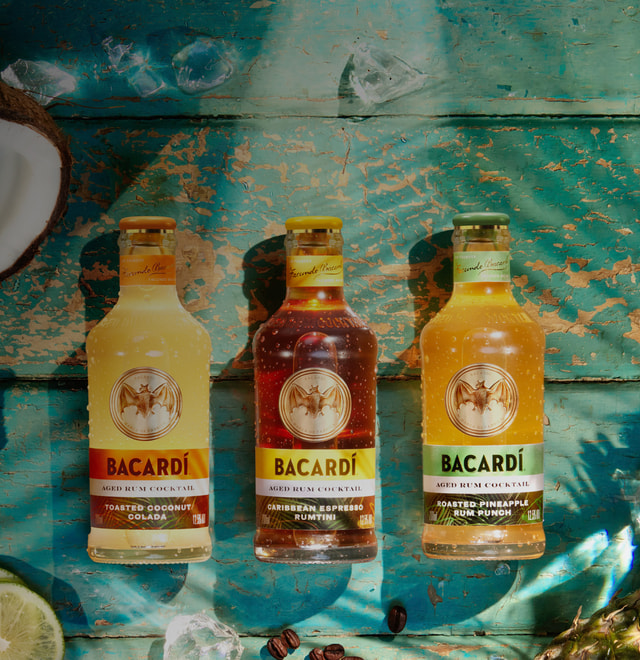
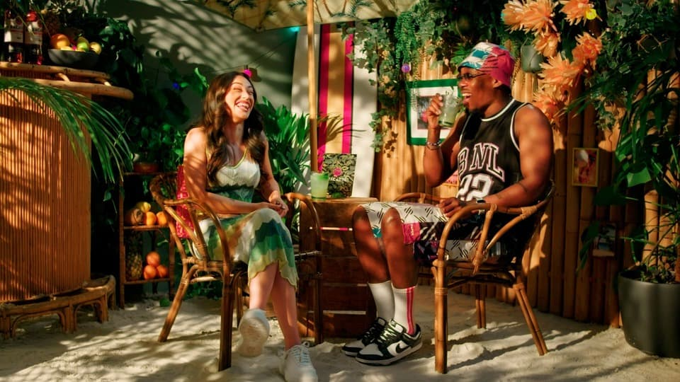
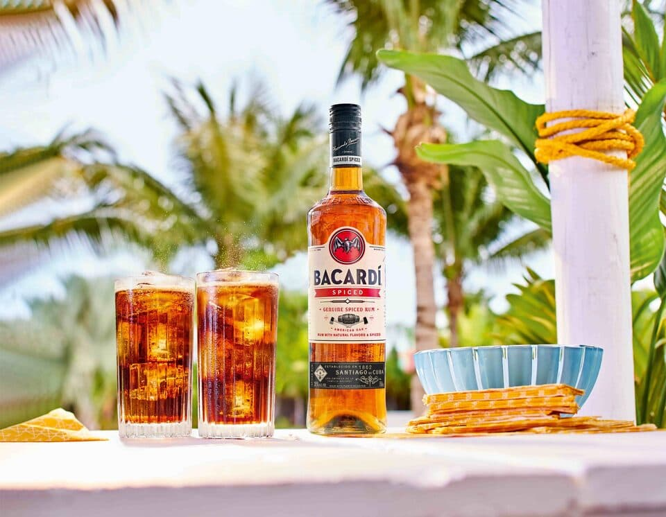
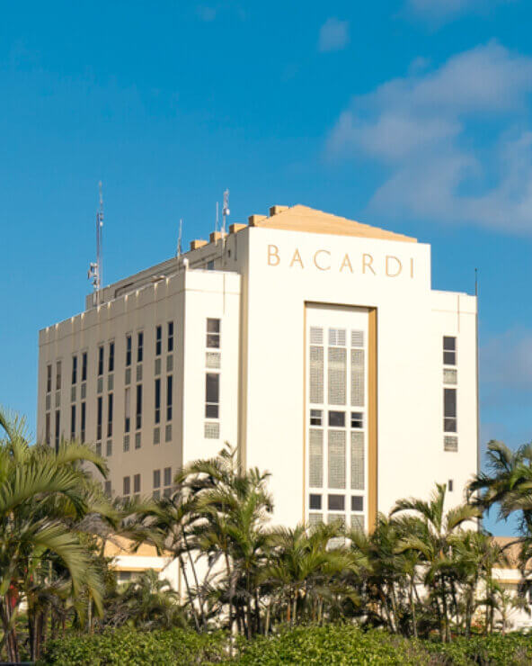
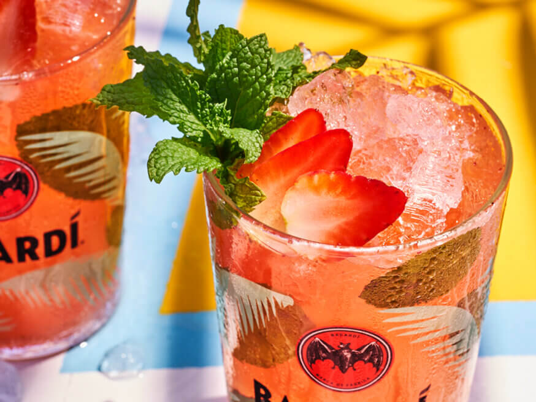
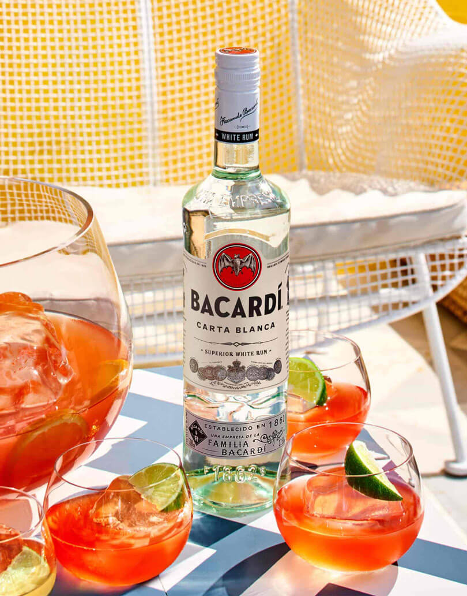

Welkom bij de officiele Bacardi site.
display none
Subkopjes
-

Nieuwe producten
Raise the bar at home
Geniet van bartender kwaliteit cocktails zonder de inspanning.
-

In het nieuws
Are you still spicy?
Weten we nog wel wat een goed feestje is? We vroegen vier Benelux artiesten wat er wel en vooral ook niet meer kan op feestjes.
-

Cocktail van de dag
Spiced & cola
Uitgesproken en toch subtiel. Bacardi spiced is de picantste van de familie. Met een geheime mix van natuurlijke smaken en kruiden geeft bacardi spiced een gewaagde draai aan de klassieker rum cola.
display none :)
Onze rums
Proef de Caraïben
Verplaats jezelf naar het kristalheldere water, de zilte wind en de zonovergoten stranden van het Caraïbisch gebied. Ons vaderland, in jouw glas.
Subkopjes
Bacardi Cocktails
Zomers genot
Een longdrink met fruit, of iets kleiners, meer bescheiden. Wij hebben een cocktail voor iedereen. Geniet van de smaken van het seizoen met een BACARDÍ zomercocktail en vier elk mooi moment.
display none :)
display none :)
  Veelgestelde vragen
Meer weten?
Hoe wordt rum gemaakt?
Rum wordt gemaakt van slechts drie ingrediënten: melasse van suikerriet, gist en water. De ingrediënten worden gefermenteerd en daarna gedistilleerd, gerijpt, gefilterd en gemengd.
Wat is witte rum?
Witte rum is meestal een lichte variant met een zachte, zoete smaak. Witte rum wordt vaak gebruikt in frisse cocktails, in populaire cocktails zoals de Mojito en Daiquiri.
Wat voor soort rum gaat er in een mojito?
Wist je dat BACARDÍ Carta Blanca witte rum werd gebruikt voor de allereerste mojito? Een tijdloze klassieker. Maar probeer ook eens onze goudkleurige rums of BACARDÍ Razz voor een unieke twist.